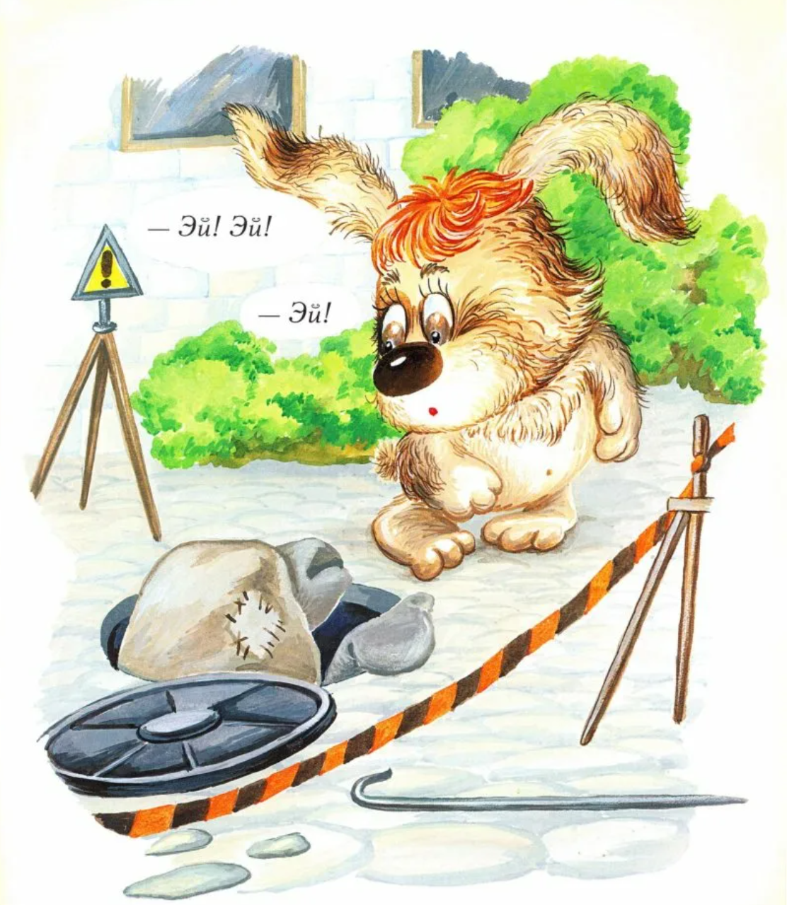

Умная собачка Соня. Продолжение 2
Андрей Усачев
Как Соня поймала эхо
Однажды собачка Соня решила поймать Эхо. Эхо — это такой зверь, или птица, или ещё кто-нибудь, с которым можно разговаривать, когда целый день сидишь одна в квартире. Ему скажешь «Гав-гав!» — и оно тебе «Гав-гав!».
Это — маленькое Эхо. А большое то, которое в лесу живет, «Гав-гав-гав-гав!» отвечает.
Но Соня и не мечтала о большом. Во-первых, квартира у них была маленькая, и хозяин мог не разрешить Соне держать большое Эхо. А во-вторых, оно могло оказаться больше маленькой Сони — и тогда уж не Соня поймала бы Эхо, а Эхо утащило бы Соню в лес.
Поэтому Соня на большое Эхо не рассчитывала, а рассчитывала на маленькое — то, которое жило во дворе.
Только где во дворе жило это Эхо, Соня не знала. Иногда оно отзывалось из-под арки, иногда — откуда-нибудь из-под соседнего дома. Но стоило Соне броситься к нему, как оно оказывалось уже на другом конце двора. Соня — обратно, а оно на прежнем месте сидит.
«Очень это Эхо хитрый и осторожный зверь, или птица, или ещё кто-нибудь», — высунув язык, думала Соня.
Но однажды, выйдя во двор, Соня увидела на тротуаре какой-то черный люк.
— Как же я сразу не догадалась! — обрадовалась она и побежала домой за специально приготовленным для Эхо мешком.
— Эй! — крикнула Соня, заглядывая в люк.
— Эй! — отозвалось из темноты Эхо.
— Что ты там делаешь? — спросила Соня.
— Живу я здесь! — ответило Эхо.
— Выходи! — крикнула Соня.
— Это зачем? — насторожилось Эхо.
— Поговорить надо! — схитрила Соня.
— Некогда мне! — грубо ответило Эхо. — И так без обеда сижу!
«Ага! — подумала Соня. — На это я тебя и поймаю…»
— А колбаски не хочешь? — спросила она.
— Ну давай! — немного подумав, согласилось эхо.
— Там, в мешке лежит! — крикнула Соня и стала спускать мешок в люк.
Почувствовав, что Эхо попалось, Соня изо всей силы дёрнула веревку и, затянув мешок, стала тащить его наверх.
Эхо оказалось на редкость тяжёлым.
Наконец мешок показался из темноты. А за ним…
Соня увидела две огромные лапы в брезентовых рукавицах. Она в ужасе бросила верёвку и пустилась наутёк.
Оглянувшись у подъезда, она увидела, что на краю люка сидело большое и черное Эхо с мешком на голове и махало ей вслед кулаком.
Но что это было — зверь, или птица, или ещё кто-нибудь — Соня так и не поняла.
Косточка
Как-то вечером Соня сидела на балконе и ела вишни.
«Года через два, — думала собачка Соня, сплевывая косточки вниз, здесь вырастет вишнёвая роща, и я буду срывать вишни прямо с балкона…»
Но тут одна косточка случайно залетела за шиворот одному прохожему.
— Это что такое?! — рассердился прохожий и посмотрел наверх.
— Ой! — испугалась Соня и спряталась за ящик с рассадой.
Соня сидела за ящиком и ждала. Но прохожий не уходил и тоже чего-то ждал.
«Наверное, ему хочется вишенки, — догадалась умная Соня. — Мне бы тоже было обидно, если бы кто-нибудь ел вишни, а мне бросал косточки…»
И незаметно бросила вниз целую горсть вишен.
Прохожий поднял ягоды, но есть почему-то не стал — а стал ругаться.
«Наверное, ему мало», — подумала Соня. И бросила вниз всю миску.
Прохожий схватил миску и убежал.
«Фу, невоспитанный какой, — подумала собачка Соня. — Даже спасибо не сказал!»
Но через минуту прохожий вернулся. А за ним пришёл ещё милиционер. А затем около них остановился ещё один прохожий и, узнав, что здесь бросают вишни, тоже задрал голову и тоже стал ждать…
«Что же они думают, что у меня их целый мешок?» — рассердилась Соня и ушла с балкона.
Она сидела на кухне, продолжала есть вишни и думала о своей вишнёвой роще. Но косточки теперь сплевывала на блюдце.
«Ведь, если подумать, — размышляла умная собачка Соня, — всё и началось-то с одной косточки!»
Соня и самовар
Однажды собачка Соня решила попить чаю с вареньем. Она наложила своего любимого вишнёвого варенья в блюдечко, включила самовар, села и стала ждать, когда закипит вода.
Сидела она, сидела, ждала-ждала. Потом поглядела на самовар — и вдруг увидела себя в самоваре!…
«Ой-ой! — подумала собачка Соня. — Как же это я в самовар попала?»
Сидит она в самоваре, глядит на себя и ничего понять не может: лапы у нее распухли, лицо вытянулось, а уши — как два больших лопуха…
— Ой-ой-ой! — догадалась собачка Соня. — Наверное, я обварилась в самоваре!
Тут вода начала кипеть, и из самовара повалил пар…
— Ой-ой-ой-ой! — испуганно закричала Соня. — Я же могу свариться!
И что было силы прыгнула из самовара!
Она задела шнур, самовар повалился — и из него хлынула горячая вода…
Но Соня уже успела отскочить в сторону.
«Хорошо, что я вовремя догадалась выпрыгнуть, — дуя на ошпаренный хвостик, думала умная собачка Соня. — А то бы и не заметила, как сварилась!»
Пятно
Однажды Соня ела из банки вишнёвое варенье и капнула на чистую белую скатерть.
«Ой-ой-ой!» — испугалась она, потому что хозяин терпеть не мог пятен и страшно сердился, когда Соня садилась с немытыми лапами на стол или прыгала на его светлые брюки.
«Что теперь будет!» — подумала Соня, разглядывая яркое вишнёвое пятно.
Она попробовала слизнуть пятно. Но пятно не слизнулось, а, наоборот, почему-то стало больше.
Соня принялась лизать дальше: лизала — лизала — лизала — лизала…
Но чем больше она лизала, тем больше пятно росло — и скоро из маленького аккуратного пятнышка превратилось в огромное, величиной с тарелку, пятнище…
«Еще немного, — в отчаянии подумала Соня, и будет одно сплошное пятно!»
И тут ей в голову пришла гениальная идея.
Собачка Соня вылила на стол остатки варенья и принялась их размазывать.
«Никакого вишнёвого пятна не будет! А будет прекрасная вишнёвая скатерть без единого пятнышка!» — думала умная собачка Соня, размазывая и разлизывая варенье по всей скатерти.
Когда все было разлизано, Соня уселась полюбоваться своей работой и вдруг с ужасом обнаружила, что под банкой осталось пятно…
Яркое белое пятно на прекрасной вишнёвой скатерти!
Соня заглянула в банку, но варенья там уже не было ни капельки…
Ох, как ругался Иван Иваныч, увидев это пятно, хотя было оно вполне белое и чистое.
«А что было бы, — подумала умная собачка Соня, — если бы я оставила то, грязное и некрасивое… Просто страшно подумать!»
Продолжение следует